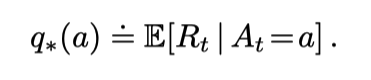
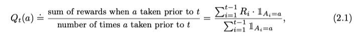
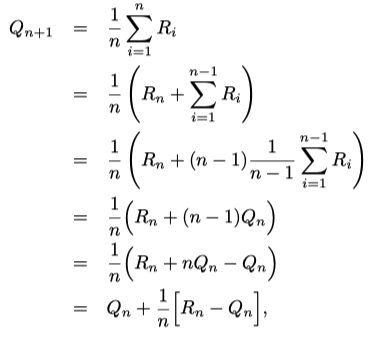
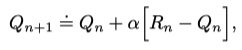
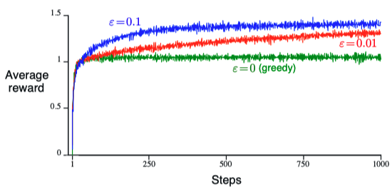
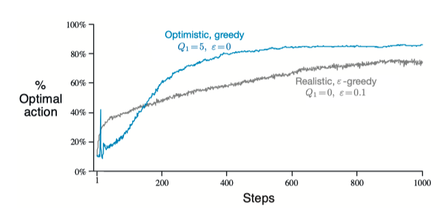
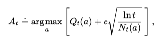

Reinforcement Learning Notes
Designs an agent that tries to maximize “reward” by trial and error.
Not supervised, but not unsupervised either.
The k-armed Bandit Problem
Faced repeatedly with a choice among k different options. After each choice you receive a numerical reward chosen from a stationary probability distribution that depends on the action you selected. The objective is to maximize the expected total reward over some time period, for example, over 1000 action selections, or time steps.

Value of an action is the expected value of reward given that action is selected.
- q*(a): TRUE Value of an action (Note known)
- Qt(a): estimated value of action a at time step t, We would like Q t (a) to be close to q*(a).
- At: Action selected on time step t
- Rt: Corresponding Reward on time step t
Goal is to maximize argmax of q*(a)
Each of the k actions has an expected or mean reward given that that action is selected; let us call this the value of that action. We denote the action selected on time step t as A t , and the corresponding reward as R t . The value then of an arbitrary action a, denoted q ⇤ (a), is the expected reward given that a is selected
Action-Value & increment estimation
Sample average method: Take the average of action-values so far.

Action Selection:
- Exploit / Greedy: argmax Qt(a) (choose the current largest estimate action / most reward right now)
- Explore: choose other than the largest estimate randomly.
Exploitation is the right thing to do to maximize the expected reward on the one step, but exploration may produce the greater total reward in the long run.

NewEstimate = OldEstimate + StepSize (Target - OldEstimate)
Nonstationary Problem
Performance changes with time. (e.g. a medicine more effective in winter)

- alpha is constant, more recent rewards affect more than older rewards.
- weight decays exponentially according to the exponent on 1- alpha.
Epsilon Greedy & optimistic initial value
Epsilon = prob of choosing to explore.
The smaller, the longer it takes for curve to plateu.


- Worse at first due to more exploration, exploration decreases with time (not goot for nonstationary problems).
- The system does a fair amount of exploration even if greedy actions are selected all the time.
Upper-Confidence-Bound Action Selection
Action selection method that chooses the most “unexplored” / “uncertain” actions when not choosing to exploit.

N t(a) denotes the number of times that action a has been selected prior to time t (the denominator in (2.1)), and the number c > 0 controls the degree of exploration. If N t (a) = 0, then a is considered to be a maximizing action.
The idea of this upper confidence bound (UCB) action selection is that the square-root term is a measure of the uncertainty or variance in the estimate of a’s value. The quantity being max’ed over is thus a sort of upper bound on the possible true value of action a, with c determining the confidence level. Each time a is selected the uncertainty is presumably reduced: N t (a) increments, and, as it appears in the denominator, the uncertainty term decreases. On the other hand, each time an action other than a is selected, t increases but N t (a) does not; because t appears in the numerator, the uncertainty estimate increases. The use of the natural logarithm means that the increases get smaller over time, but are unbounded; all actions will eventually be selected, but actions with lower value estimates, or that have already been selected frequently, will be selected with decreasing frequency over time.